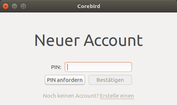
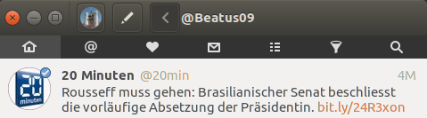
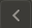

Corebird
Dieser Artikel wurde für die folgenden Ubuntu-Versionen getestet:
Ubuntu 17.10 Artful Aardvark
Ubuntu 16.04 Xenial Xerus
Zum Verständnis dieses Artikels sind folgende Seiten hilfreich:
Corebird  ist ein freier Twitter-Client auf Basis der Grafikbibliothek GTK 3, der mehrere Konten (Accounts) verwalten kann und neben Timeline und Interaktionen auch Favoriten und Listen anzeigt. Er wird aktiv entwickelt und gepflegt.
ist ein freier Twitter-Client auf Basis der Grafikbibliothek GTK 3, der mehrere Konten (Accounts) verwalten kann und neben Timeline und Interaktionen auch Favoriten und Listen anzeigt. Er wird aktiv entwickelt und gepflegt.
Nachdem die Alternative Birdie nur noch für ElementaryOS weiterentwickelt wird und Turpial auf der Grafikbibliothek Qt basiert, ist Corebird zusammen mit Polly erste Wahl, wenn man einen nativen grafischen Twitter-Client sucht.
Installation¶
Corebird ist ab Ubuntu 16.04 in den offiziellen Paketquellen enthalten und lässt sich über das gleichnamige Paket installieren [1]:
corebird (universe)
 mit apturl
mit apturl
Paketliste zum Kopieren:
sudo apt-get install corebird
sudo aptitude install corebird
Alternativ kann man GetDeb (corebird ), ein "Personal Packages Archiv" (PPA) [2] oder Flatpak zur Installation nutzen.
PPA¶
Adresszeile zum Hinzufügen des PPAs:
ppa:ubuntuhandbook1/corebird
Hinweis!
Zusätzliche Fremdquellen können das System gefährden.
Ein PPA unterstützt nicht zwangsläufig alle Ubuntu-Versionen. Weitere Informationen sind der  PPA-Beschreibung des Eigentümers/Teams ubuntuhandbook1 zu entnehmen.
PPA-Beschreibung des Eigentümers/Teams ubuntuhandbook1 zu entnehmen.
Damit Pakete aus dem PPA genutzt werden können, müssen die Paketquellen neu eingelesen werden.
Anschließend erfolgt die Installation wie oben angegeben.
Flatpak¶
Um eine stets aktuelle Fassung von Corebird zu erhalten, ist die Installation auch mittels Flatpak möglich. Falls Flatpak auf dem Ubuntu-System noch nicht eingerichtet ist, muss ein abweichendes PPA hinzugefügt werden.
Adresszeile zum Hinzufügen des PPAs:
ppa:alexlarsson/flatpak
Hinweis!
Zusätzliche Fremdquellen können das System gefährden.
Ein PPA unterstützt nicht zwangsläufig alle Ubuntu-Versionen. Weitere Informationen sind der PPA-Beschreibung des Eigentümers/Teams alexlarsson zu entnehmen.
Damit Pakete aus dem PPA genutzt werden können, müssen die Paketquellen neu eingelesen werden.
Anschließend wird die eigentliche Installation von Corebird über das Terminal mit zwei Befehlszeilen durchgeführt:
flatpak remote-add --if-not-exists flathub https://flathub.org/repo/flathub.flatpakrepo flatpak install flathub org.baedert.corebird
Flatpak-Installationen können über das Terminal ebenfalls einfach aktualisiert werden:
flatpak update
Verwendung¶
Der Programmstart [3] erfolgt bei Ubuntu-Varianten mit einem Anwendungsmenü über "Internet -> Corebird". Ansonsten verwendet man den Programmnamen. Nach der Installation können ein oder mehrere vorhandene Twitter-Accounts mit Corebird verbunden werden.
Ersteinrichtung¶
Nach dem ersten Starten muss die Verknüpfung zu einem bestehenden (oder einem neuen) Twitter-Account angelegt werden.

Anschließend meldet sich Corebird folgendermaßen:

Bedienung¶
Die Bedienung des Programms ist intuitiv zu erfassen und wird im Folgenden nur kurz beschrieben:
| Bedienung | ||
| Symbol | Zweck | |
| Account | ||
| Neuen Tweet schreiben | ||
|  | Zurück in der Ansicht | |
| Account Name | ||
| normale Ansicht | ||
| direkte Nachrichten | ||
| Favoriten | ||
| direkte Nachrichten | ||
| Listen | ||
| geblockte Twitterer | ||
| Suche | ||
Mit einem Rechtsklick  mitten in einen Tweet lassen sich folgende Befehle aufrufen: Retweeten, Favorisieren, Antworten und Zitieren.
mitten in einen Tweet lassen sich folgende Befehle aufrufen: Retweeten, Favorisieren, Antworten und Zitieren.
Problembehebung¶
Links¶
Corebird
auf TwitterHow to Install Twitter App Corebird 1.2.1 in Ubuntu 16.04
- Blogbeitrag, 05/2016Twitter
 Übersichtsartikel
Übersichtsartikel
- Erstellt mit Inyoka
-
 2004 – 2017 ubuntuusers.de • Einige Rechte vorbehalten
2004 – 2017 ubuntuusers.de • Einige Rechte vorbehalten
Lizenz • Kontakt • Datenschutz • Impressum • Serverstatus -
Serverhousing gespendet von